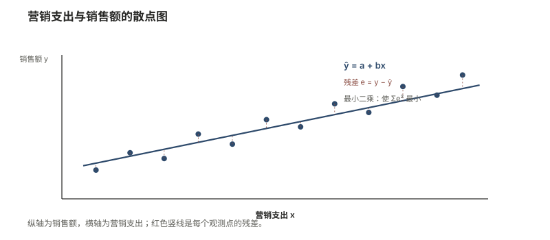

MTH113 · 第 10 章
简单线性回归与相关
Simple Linear Regression & Correlation
虚线下划线为术语；悬停查看中文、英文与释义，完整词典见“术语”。
本章目录
本讲处理两个数值变量之间的关系：先用散点图与相关系数描述线性关联的强弱与方向，再用最小二乘拟合回归直线，解释斜率、截距、残差与 R2，最后用残差图检查模型并警惕外推与因果误读。
本章要点
- 回归区分响应变量 y 与解释变量 x；相关不区分，但回归的 x、y 角色不能随意互换。
- 散点图用方向、形式、强度、异常特征四个词描述；相关只捕捉线性关系。
- 样本协方差 sxy 有单位、受量纲影响；相关系数 r = sxy/(sxsy) 无单位，−1 ≤ r ≤ 1。
- 最小二乘直线 ŷ = a + bx 使残差平方和最小；b = Sxy/Sxx，a = ȳ − b x̄，直线必过 (x̄, ȳ)。
- 斜率 b = r sy/sx，与 r 同号；斜率有单位，相关无单位。
- R2 = 1 − SSE/SST 是解释变异比例；简单线性回归中 R2 = r2。
- 残差标准误 se = √[SSE/(n−2)]，自由度 n−2 来自估计了两个参数。
- 高 R2 不能替代散点图与残差图；外推、异常点、影响点与因果误读是常见陷阱。
10.1 回归的问题与变量角色
许多实际问题关心两个数值变量之间的关系：学习时间是否预测考试成绩？广告支出是否预测销售额？温度升高是否增加用电？配送距离是否增加配送时间？回归regression是用一个或多个解释变量描述并预测响应变量平均值的方法。
两个角色要分清。解释变量explanatory variable x 用来解释或预测另一个变量，例如学习时间、营销支出、距离；响应变量response variable y 是被解释或预测的变量，例如考试分数、销售额、配送时间。回归中 x 与 y 的角色重要；相关中角色不重要，r(x,y) = r(y,x)。
讲义例：公司记录每周营销支出 x（千元）与销售额 y（千件）。数据为 x = 2,3,4,5,6,8,9,10,12,14；y = 21,24,26,29,31,35,39,42,46,50。问题是：销售额能否用支出的直线关系描述？这组数据将贯穿整讲。
W10 p.5–7
10.2 散点图与四词描述
两个数值变量的第一件工具是散点图scatterplot：每个个体是一个点 (xi, yi)。营销数据画出后呈现强正相关、近似线性的形态，没有明显极端离群点。
描述散点图用四个词：
- 方向：正、负或无明显方向。正方向指 x 增大时 y 倾向增大；负方向相反。
- 形式：线性、弯曲、聚集或不定形。
- 强度：弱、中等或强，指点围绕一条直线的紧密程度。
- 异常特征：离群点或影响点。
四类典型图形要能识别：正线性（x 增大 y 增大）、负线性（x 增大 y 减小）、弯曲（相关可能很小但关系很强）、无明显关联（知道 x 对 y 帮助很小）。讲义特别提醒：弯曲关系可能被相关系数漏掉，因为 r 只衡量线性。

绘图提示词
Clean vector scatterplot of marketing spend on the x axis from 0 to 16 thousand RMB against sales on the y axis from 20 to 50 thousand units, ten points rising in a strong approximately linear positive pattern, with axes labelled Marketing spend x and Sales y. Flat 2D, thin 1.5 px strokes, muted slate blue points and warm grey axes, white background, English labels only, no cartoon, no gradient, no shadow.
W10 p.8–13
10.3 协方差：方向的数量化
散点图是第一步，但还需要一个数值衡量“x 与 y 是否一起偏离均值”。对每个观测定义中心化值 xi − x̄ 与 yi − ȳ，看乘积的符号：
- x 高于均值、y 也高于均值：乘积为正，贡献正相关。
- x 低于均值、y 也低于均值：乘积为正，贡献正相关。
- x 高于均值、y 低于均值：乘积为负，贡献负相关。
- x 低于均值、y 高于均值：乘积为负，贡献负相关。
样本协方差sample covariance把这些乘积平均：
sxy > 0 表示正线性倾向，< 0 表示负线性倾向，≈ 0 表示线性倾向很弱。营销数据的 sxy 为正，符合图上正相关。
协方差的局限：它依赖测量单位。把 x 从元改成万元，sxy 会成比例变化，因此难以跨变量、跨情境比较。相关系数正是为解决这个问题而设计的。
W10 p.14–16
10.4 相关系数：无单位的线性强度
Pearson 相关系数Pearson correlation coefficient定义为
性质：−1 ≤ r ≤ 1；符号给方向；绝对值给线性强度；r 无单位。
解释尺度（讲义示意）：接近 −1 强负，接近 −0.5 中等负，接近 0 弱，接近 0.5 中等正，接近 1 强正。但讲义明确警告：没有“强/弱”的通用截断值，必须结合散点图与情境判断。
无单位unit-free是 r 的关键优势：身高用厘米或米记录，r 不变；金额用元或千元记录，r 也不变。因为分子分母的单位同时抵消。营销数据的 r = 348.10/√(142.10 × 856.10) ≈ 0.9980，线性关系极强。
四种常见误读：r = 0 不代表“无关系”，只代表“无线性关系”；r 接近 ±1 不证明因果；一个离群点可以大幅改变 r；r 不适用于两个分类变量。
W10 p.17–20
10.5 回归直线与残差
用一条直线从 x 预测 y：
ŷ 是预测值或拟合值，a 是估计截距，b 是估计斜率。斜率解释：x 每增加一个单位，y 的预测值平均改变 b 个单位。
残差residual定义为
正残差表示实际值在直线上方，负残差表示在下方；残差大小衡量该观测的预测误差。回归选线的原则就是让残差在某种数学意义下尽量小。
残差与“预测误差”相关但不同：残差是已观测数据点相对拟合线的偏差；预测误差是未来观测值与预测值之差。后者需要额外的预测区间公式，本讲只介绍拟合值。

W10 p.21–22、53
10.6 最小二乘原理与公式
对候选直线 ŷ = a + bx，定义残差平方和
最小二乘直线least-squares line是使 Q(a,b) 最小的直线。平方的作用有二：防止正负误差相消；给大误差更大惩罚。
对 a 与 b 分别求偏导并令其为 0，得正规方程：
定义中心化平方和与交叉和：
解得
由 a 的表达式可知，拟合直线必过点 (x̄, ȳ)。这是一个很好的检查：把 x̄ 代入 ŷ 应得到 ȳ。
手算时可用原始和公式：Sxx = Σxi2 − (Σxi)2/n，Syy = Σyi2 − (Σyi)2/n，Sxy = Σxiyi − (Σxi)(Σyi)/n。这些公式便于用电子表格核对。
W10 p.23–25、50
10.7 斜率与相关的关系、截距的谨慎解释
斜率还可以写成
因此 b 与 r 永远同号。r 衡量无单位的线性强度与方向；b 衡量“x 每增加一个单位，y 平均改变多少”，带 y/x 的单位。预测时斜率更有用，比较线性强度时相关更有用。
截距 a 是 x = 0 时的预测值：ŷ = a + b(0) = a。它有时有意义，例如产量为 0 时的固定成本；有时只是直线的数学锚点。若 x = 0 落在观测范围之外，截距的解释要非常谨慎，甚至不该解释。
例：配送时间回归 ŷ = 1.8 + 0.035x，x 为公里、y 为小时。斜率 0.035 表示每多 1 公里，预测配送时间增加约 0.035 小时，即 2.1 分钟。截距 1.8 是距离为 0 时的预测时间，可解释为固定处理时间，但前提是 0 公里在情境中有意义。
W10 p.26–27、54–55
10.8 实例计算、预测与外推
营销数据的汇总量：x̄ = 7.3，ȳ = 34.3，Sxx = 142.10，Syy = 856.10，Sxy = 348.10。于是
斜率解释：营销支出每增加 1 千元，预测销售额平均增加约 2.45 千件。注意“预测”“平均”“伴随”这些词，不要写成“导致”。
预测 x = 11 千元时的销售：ŷ = 16.417 + 2.450(11) ≈ 43.367 千件。11 落在观测范围 2 到 14 之内，属于内插interpolation，通常较安全。
外推extrapolation是预测远离观测范围的值。若用 x = 30 预测，就假设“同样的线性关系在 30 处仍成立”，但数据只支持 2 到 14。除非有强情境依据，否则不要外推。外推的风险不是计算错误，而是模型假设在范围外失效。
活动：n = 8，x̄ = 9.375，ȳ = 64.375，Sxx = 115.875，Sxy = 336.875。则 b = 336.875/115.875 ≈ 2.9072，a = 64.375 − 2.9072(9.375) ≈ 37.1197，拟合线 ŷ = 37.120 + 2.907x，且过点 (9.375, 64.375)。
W10 p.28–32、56–57
10.9 拟合值、残差表、SSE、R2 与 se
营销数据的拟合值与残差：x = 2 时 ŷ = 21.317，e = −0.317；x = 3 时 ŷ = 23.766，e = 0.234；x = 4 时 ŷ = 26.216，e = −0.216；x = 5 时 ŷ = 28.666，e = 0.334；x = 6 时 ŷ = 31.115，e = −0.115；x = 8 时 ŷ = 36.015，e = −1.015；x = 9 时 ŷ = 38.464，e = 0.536；x = 10 时 ŷ = 40.914，e = 1.086；x = 12 时 ŷ = 45.814，e = 0.186；x = 14 时 ŷ = 50.713，e = −0.713。
残差平方和 SSE = Σei2 ≈ 3.365。总平方和 SST = Σ(yi−ȳ)2 = Syy = 856.10。于是
解释：销售额观测变异的约 99.61% 可由与营销支出的线性关系解释。简单线性回归中 R2 = r2；这里 r ≈ 0.9980，平方即 0.9961。R2 非负，只衡量解释比例；方向由 r 的符号给出。
残差标准误为
典型观测值偏离拟合线约 0.65 千件。自由度是 n−2，因为回归估计了两个参数 a 与 b；样本标准差只估计一个均值，所以用 n−1。这是自由度概念在回归中的延伸。
变异分解：SST = SSR + SSE，其中 SSR = Σ(ŷi−ȳ)2 是解释变异，SSE 是未解释变异。总变异 = 解释变异 + 未解释变异。
W10 p.33–40、51–52
10.10 残差图、模型诊断与异常点
判断线性拟合好坏有三种方式：散点图看关系是否线性；R2 看 y 的变异被解释多少；残差图与 se 看误差是否小且无图案。高 R2 不足以单独证明模型好，必须同时看散点图与残差图。
残差图的三种典型形态：
- 残差随机散布在 0 附近：支持线性模型。
- 残差呈弯曲图案：说明直线漏掉了非线性结构，应考虑曲线或变换。
- 残差随 x 增大而扩散：说明方差不恒定（异方差），线性模型的标准误与区间会受影响。
回归的正式假设预览：线性（Y 的均值是 x 的线性函数）；独立；方差恒定；给定 x 时误差近似正态。散点图与残差图是这些假设的实用检查工具。第 11 周会用这些假设做正式检验。
离群点outlier是 y 方向远离直线的点，残差大；影响点influential point是删除后会显著改变拟合直线的点，通常 x 方向也很极端。实务原则：不要自动删除点；先判断它是数据错误还是有意义的特殊案例。
Clean vector row of three residual plots with x on the horizontal axis and residual on the vertical axis: first random scatter around zero, second a clear U-shaped curve, third a fan shape with increasing spread to the right. Each panel labelled random, curved, nonconstant variance. Flat 2D, thin 1.5 px strokes, muted slate blue points and warm grey zero line, white background, English labels only, no cartoon, no gradient, no shadow.
W10 p.41–48
10.11 相关不等于因果、计算技巧与结果报告
回归直线描述相关association，不自动证明改变 x 会导致 y 改变。讲义列出三类替代解释：混杂变量可能同时影响 x 与 y；影响方向可能相反；样本可能不代表目标总体。谨慎的措辞是“与…相关/伴随”，除非研究设计支持因果。
计算技巧：用原始和公式可减少逐步中心化的舍入误差；Sxx、Syy、Sxy 三个量足够支撑斜率、截距、相关与 R2。软件命令只作核对：R 用 lm(y ~ x) 与 cor(x,y)，Excel 用 =SLOPE、=INTERCEPT、=CORREL、=RSQ，并注意哪个范围是 x、哪个是 y。
好的回归报告包含：响应与解释变量；散点图描述；拟合方程；斜率解释；R2 与残差标准误；必要的外推或异常点警告。讲义示范：10 周数据中销售与营销支出呈强正、近似线性关系，拟合线为 sales = 16.417 + 2.450(spend)；每多 1 千元支出，预测销售增加约 2.45 千件；模型解释约 99.61% 的销售变异，典型偏离约 0.65 千件；预测应限制在 2 到 14 千元的观测范围内。
W10 p.49、58–61
10.12 常见错误与公式总结
讲义列出六类错误：回归中把 x 与 y 对调；把相关解释为因果；因为有 r 就跳过散点图；把直线外推到观测范围之外；把 R2 当成“预测正确的百分比”；解释斜率与 se 时忘记单位。
| 量 | 公式 |
|---|---|
| 样本协方差 | sxy = Σ(xi−x̄)(yi−ȳ)/(n−1) |
| 相关系数 | r = Sxy/√(SxxSyy) = sxy/(sxsy) |
| 斜率 | b = Sxy/Sxx = r sy/sx |
| 截距 | a = ȳ − b x̄ |
| 残差 | ei = yi − ŷi |
| 决定系数 | R2 = 1 − SSE/SST = r2 |
| 残差标准误 | se = √[SSE/(n−2)] |
| 变异分解 | SST = SSR + SSE |
一句话收束：先用散点图看形状，再用 r 量线性强度，用最小二乘拟合直线，用残差与 R2 判断拟合，最后把结论限制在观测范围与相关（而非因果）的语言内。
W10 p.62–64